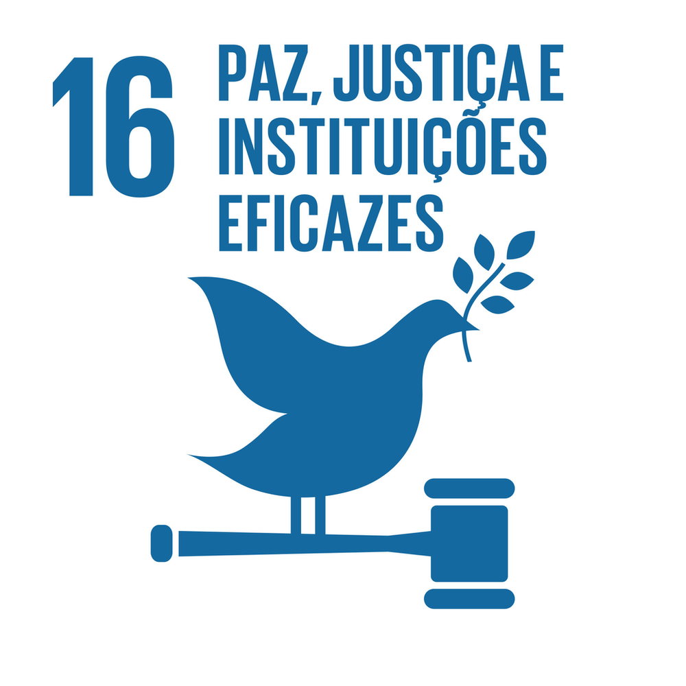

O que você irá ver aqui?
Devocionais

Para você se aprofundar na palavra de Deus!
Quiz Bíblico

Para testar seus conhecimentos Bíblicos!
Comunidade

Para você compartilhar suas dúvidas, testemunhos e eventos legais!
ODS - Objetivo de Desenvolvimento Sustentável

ODS 16 - Paz, Justiça e Instituições Eficazes
Acreditamos que viver o Evangelho também significa cuidar do próximo e da sociedade ao nosso redor. Por isso, nosso projeto também se conecta com a ODS 16. Ao anunciar o Evangelho, promover amor ao próximo, acolher pessoas, contribui diretamente para a paz social, inclusão e transformação de realidades.